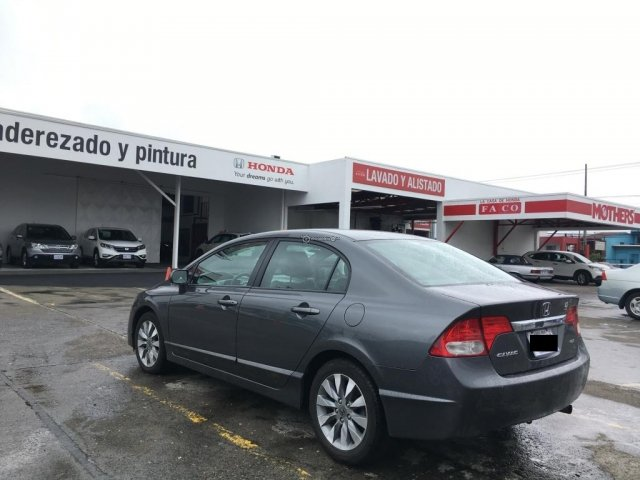

SeguimientoReparacion

Vehiculo: Honda Civic 2009Fecha Inicio: {{tiempo | date: 'dd/MM/yyyy'}} Tipo Reparacion: Problemas en Transmision.Tiempo Restante: 3 Dias. Nota: La transmision estaba presentando inconvenientes con el switch de presion
el cual fue reemplazado, y se estan realizando las pruebas correspondiente, para luego ser
entregado justo en el tiempo estimado.